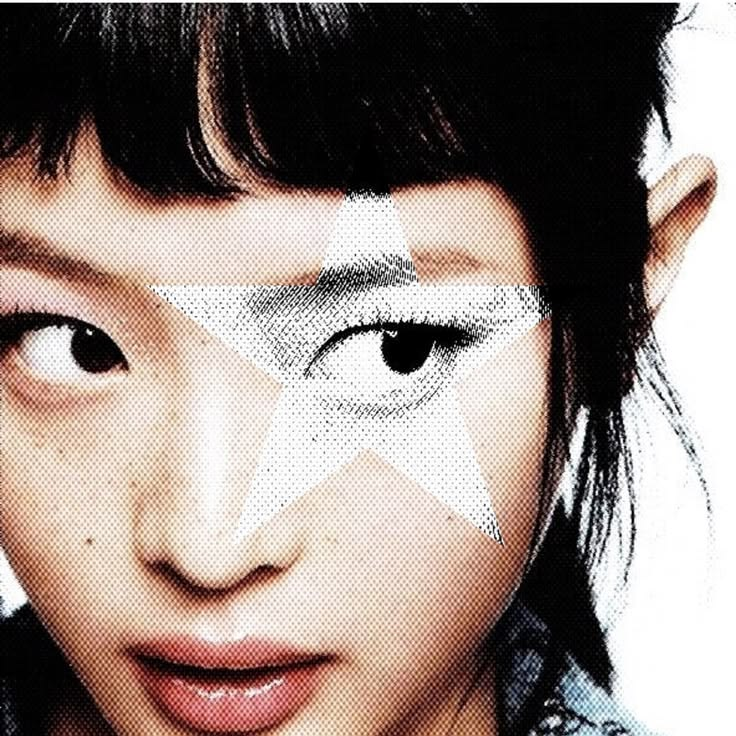
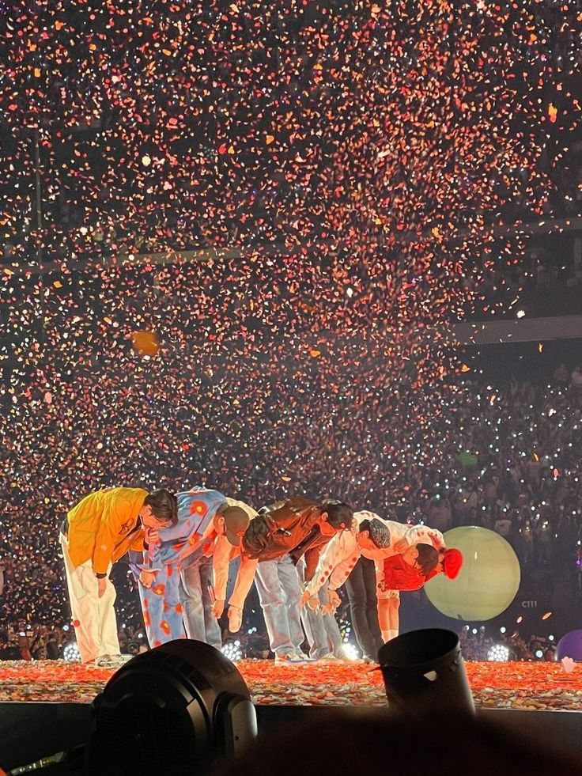

K-pop is known for more than just its music. From album artwork and music videos to fashion, choreography, and stage design, visuals have ALWAYS played a huge role in K-pop artists/groups stylistic expressions .
As K-pop has evolved and shifted through different generations though. With each passing generation, they have shown us new concepts and styles that reflect changes in music, technology, fashion, and popular culture.
This archive explores that very visual evolution of K-pop from the second generation to the fifth generation, highlighting the concepts, aesthetics, album designs, music videos, and artists that helped shape each era.


© 2026 K-pop's Visual Archive. All rights reserved.